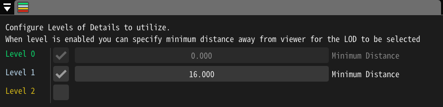

14. Level of Details (LOD)を設定しよう！¶
概要¶
Level of Details (LOD)により、アーティストは、距離に応じてシステムリソースとスクリーンスペースを効率的に使用するエフェクトを作成することができます。 カメラとの距離に応じて、システムリソースとスクリーンスペースを効率的に使用するエフェクトを エフェクトを作成できます。

本記事ではサンプルファイル Aura01.efkefcで検証します。
ここからダウンロードできます。

このエフェクトでは、 Particle というノードが見えます。
これは小さな粒子を生成し、竜巻の底部から頂上に向かって飛びます。
カメラがエフェクトに近づくと、これらのパーティクルが見え、エフェクトに素晴らしいディテールを加えられ、詳細が表示されます。
しかし、カメラが遠くにある場合は、かなり小さいので、ほとんど見えませんが、それでもシミュレーションの各フレームで計算し、処理する必要があります。 これは、距離に応じて効果を簡略化することができるため、「Level of Details (LOD)」の優れた事例と言えます。 を簡略化することができるからです。そのため、エフェクトノードが視聴者から遠い場合は、非表示にしたり、完全にシャットダウンすることができます。
Levels Setup¶
さっそく、これから使うレベルの設定をしてみましょう。メニュー > 詳細レベル に移動します。

このパネルでは、有効な詳細レベルと、各レベルを有効にする距離を指定します。 レベル0は基本レベルで、常に距離0から始まり、選択できる他のレベルがない場合に使用されます。 1つのエフェクトで最大4つのレベルを使用することができます。
Level 1 を有効にしてみましょう。デフォルトでは、最小距離が16に設定されていて、今回のケースでは問題ありません。 レベルの最小距離は自由に設定することができます。
エディタ上でマウスホイールを使ってカメラの位置を変えてみましょう。
エフェクトまでの距離が16より大きくなると、プレイヤーの右下にあるCurrent LODが1に変わるのがわかると思います。
パーティクルノードの設定¶

お気づきのように、セカンドレベルを有効にした後、ノード階層の各色ボタンは、各レベルごとに2行で表示されます。 これは、各エフェクトノードが有効なレベルが表示され、各エフェクトノードが有効であることを示します。 このボタンをクリックすると、各ノードで選択されているレベルを変更できます。
Particleノードの近くでこのボタンをクリックしてみましょう。

ここでは、このノードを有効にし、通常通り動作させるレベルを選択することができます。
デフォルトでは、各ノードはすべてのレベルで有効になっていますが、レベル1では Particle ノードを無効にしたいので、そのレベルのチェックを外しておきます。
レベル選択の下で、現在のLODが選択されていない時に有効になるノードの挙動を変更することができます。 現在のLODが選択されていない時に適用されます。3種類の動作が用意されています。
Hide Particles - パーティクルは引き続きスポーンして更新されますが、レンダリングのために送信されなくなります。これは GPU の使用を減らしますが、更新が行われるため CPU リソースは消費されます。
Stop New Particles Spawn - 既にスポーンされたパーティクルは引き続きアップデートとレンダリングを行いますが、新しいパーティクルはスポーンされません。これにより、パーティクルが突然隠されることがなく、寿命が尽きるまで表示されるので、レベル間の移行がスムーズになります。
Stop New Particles Spawn and Hide Existing - 前の2つの動作を組み合わせたものです。新しいパーティクルは生まれず、すでにスポーンされたパーティクルは隠されます。ただし、スポーンされたパーティクルは死ぬまで更新され続けることに注意してください。
デフォルトではHide Particlesが選択されています。
ここでは Stop New Particles Spawn and Hide Existing を選択しましょう。
結果の検証¶
ビューワーの右下に表示される統計情報を見て、設定を確認することにします。
Current LOD: 現在使用されている詳細度
D: 現在のレンダリングの描画コール数
V: 現在のレンダリングの頂点数
P: 現在のレンダリングのパーティクル数。
LOD 0 がアクティブなときにすべてを正しく実行した場合、約 115 個のパーティクルが表示されるはずです。 次に、LOD 1 が選択された距離までカメラをエフェクトから遠ざけると、パーティクルの数が徐々に減っていき、約 15 個になることを確認できます。
まとめ¶
詳細レベルを設定する方法と、現在アクティブなレベルに基づいて動作を変更するエフェクトノードの構成を設定する方法について説明しました。 詳細レベルの設定は、エフェクト制作の最後のステップで設定することをお勧めします。
Level of Detailsは非常に汎用性が高く、様々な方法で設定することができます。 レベルごとに別々のルートノードを作成すれば、ある距離のエフェクトを完全に置き換えることもできます。 エフェクトの最適化処理は厄介ですが、30fpsでやっと動くゲームと60fpsで安定して動くゲームを分けるのは、このプロセスである場合もあります。